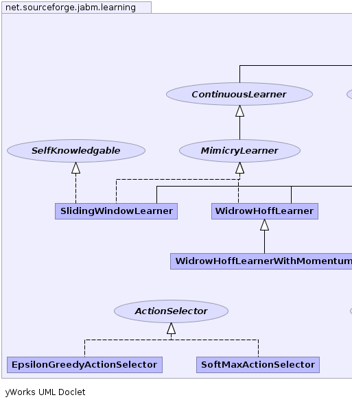
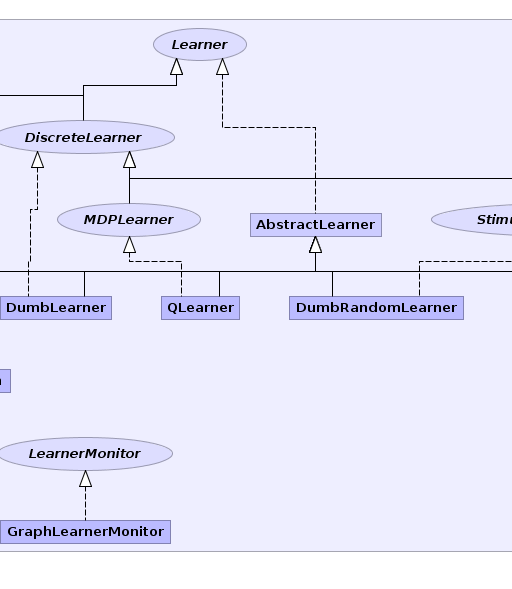
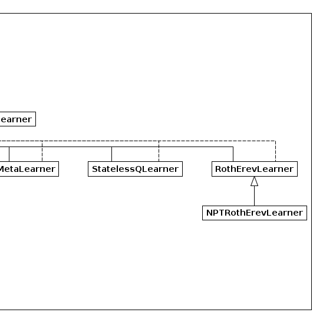

|
|||||||||
| PREV PACKAGE NEXT PACKAGE | FRAMES NO FRAMES | ||||||||
See:
Description
| Interface Summary | |
|---|---|
| ActionSelector | An action selection policy for a reinforcement-learning algorithm. |
| ContinuousLearner | A learning algorithm that outputs a continuous signal. |
| DiscreteLearner | A learner that learns a discrete number of different actions. |
| Learner | Classes implementing this interface indicate that they implement a learning algorithm. |
| LearnerMonitor | |
| MDPLearner | Classes implementing this interface implement learning algorithms for Markoff descision processes (MDPs). |
| MimicryLearner | A learner that attempts to adjust its output to match a training signal. |
| SelfKnowledgable | Classes implementing this interface indicate that they know if their output is good enough to be used. |
| StimuliResponseLearner | Classes implementing this interface implement myopic stimuli-response reinformcement learning algorithms. |
| Class Summary | |
|---|---|
| AbstractLearner | |
| DumbLearner | A learner that chooses the same specified action on every iteration. |
| DumbRandomLearner | A learner that simply plays a random action on each iteration without any learning. |
| EpsilonGreedyActionSelector | An implementation of the epsilon-greedy action selection policy. |
| GraphLearnerMonitor | |
| MetaLearner | |
| NPTRothErevLearner | A modification of RothErev to address parameter degeneracy, and modified learning with 0-reward. |
| QLearner | An implementation of the Q-learning algorithm. |
| RothErevLearner | A class implementing the Roth-Erev learning algorithm. |
| SlidingWindowLearner | maintains a sliding window over the trained data series and use the average of data items falling into the window as the output learned. |
| SoftMaxActionSelector | An implementation of the softmax action selection policy. |
| StatelessQLearner | A memory-less version of the Q-Learning algorithm. |
| WidrowHoffLearner | An implementation of the Widrow-Hoff learning algorithm for 1-dimensional training sets. |
| WidrowHoffLearnerWithMomentum | |
A library of algorithms for individual learning.
|  |  |  |
|
|||||||||
| PREV PACKAGE NEXT PACKAGE | FRAMES NO FRAMES | ||||||||